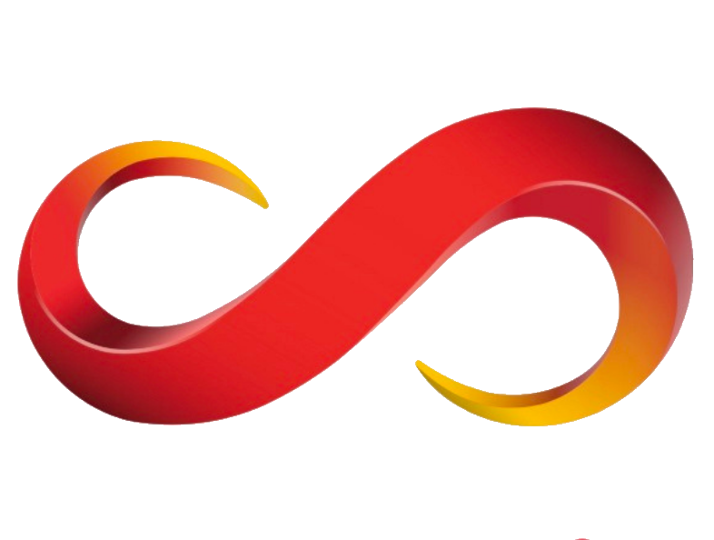

Jiawei (Allen) Zhu
ML Systems Engineer & Software Developer
Education
Carnegie Mellon University
Master of Science, Computer Systems
Computer Systems, Machine Learning Systems & Infrastructure
Expected Dec 2025
Vanderbilt University
Bachelor of Science, Computer Science
Computer Science and Mathematics
Aug 2019 - May 2023
Work Experience
2025
Meta (Facebook)
Software Engineer Intern
Menlo Park, CA
Expected May 2025 – Aug 2025
- Will be interning at Meta during Summer 2025 as a Software Engineer Intern.
2024
Ericsson
Machine Learning Engineer Intern – ML Training Data
Beijing, China
Jun 2024 – Aug 2024
- Root Cause Analysis and Anomaly Detection: Increased false return identification accuracy by 9.1% through leveraging GBDT and XGBoost to build baseline for anomaly detection, collaborated with 10+ teams to reduce return rates for 5G Radio products.
- LLM Parameter Optimization: Achieved significant performance improvements in model deployment efficiency by 5% by building parameter-efficient fine-tuned open-source LLMs (7B/13B) using LoRA and QLoRA for optimization.
- Big Data Pipeline and Feature Engineering: Scaled feature engineering to handle TB-level data, streamlining production using PySpark for parsing, integrating with SageMaker and S3 to develop ETL pipelines to process 1M+ unstructured telemetry data.

SenseTime
Software Engineer Intern – LLM Application Development
Beijing, China
Apr 2024 – Jun 2024
- LLM Quantization Optimization: Deployed state-of-the-art large language models using ONNX and TensorRT, applying post-training quantization with SmoothQuant, achieving a 53% increase in model speed performance by enabling INT8 inference.
- ML Model Deployment and Feature Development: Deployed SenseTime foundational models in a high-concurrent distributed service environment, contributing over 30 PRs and merging 1500+ lines of code in C++ and Go.
- Distributed System Scalability: Utilized gRPC, multi-threading, and goroutines channel workflows to handle over 200,000+ daily requests and more than 100,000 active users, ensuring scalability and performance in a demanding production environment.
2021 - 2022
Vanderbilt University
Machine Learning Research Assistant
Nashville, TN
May 2021 – Oct 2022
- Image Processing Algorithm Development: Developed and fine-tuned image processing algorithms for TB-scale high-density imaging data, applying NN-Gaussian Processing and Otsu's method to improve accuracy on CircleNet by 9.89%.
- Large Dataset Optimization and Performance Enhancement: Implemented inference optimization through PyTorch and ONNX, achieving a 15% increase in processing speed for large-scale datasets, significantly enhancing model efficiency and scalability.
2020

IFLYTEK
Software Engineer Intern – NLP Backend Platform Development
Hefei, China
May 2020 – Jul 2020
- API Integration and Optimization: Engineered integrations for voice recognition APIs using JSON-RPC in C++, improving client-server response time by 2 seconds for insurance sector clients in a cloud-based system.
Projects
- Architected a CUDA C++ accelerated LLaMA inference engine with custom memory management
- Achieved processing speed of 60.34 tokens/s for LLaMA (1.1B) on NVIDIA RTX 3060 Laptop GPU
- Developed critical operators including MatMul, LayerNorm, RMSNorm and attention mechanisms
- Implemented KV-Caching, reducing memory overhead and improving inference efficiency
- Developed a custom ML framework using Python and C++, featuring auto-differentiation via computational graph for efficient model training and optimization
- Deployed the LLaMA2 language model within the framework, incorporating speculative decoding techniques for faster and more optimized inference
- Authored a comprehensive guide on inference optimization with TensorRT
- Detailed techniques such as FP16/INT8 quantization and operator fusion to enhance model efficiency
- Demonstrated methods to reduce latency in production environments
- Architected a distributed ledger system utilizing proof-of-work consensus with Go and Gin Web Framework
- Engineered a centralized peer discovery mechanism via tracker server
- Implemented RAFT consensus algorithm for high availability and data consistency
- Built Byzantine fault-tolerant network for decentralized text storage and propagation
- Led development of scalable multiplayer server system using Go and WebSocket
- Implemented RAFT consensus with gRPC for leader election and log replication
- Optimized performance using Goroutine through custom mailbox connection structure
- Enhanced system reliability in distributed computing environment
- Researched correlation between fMRI data and vigilance under Prof. Catherine Chang's guidance
- Processed and quality-assured 5,000+ brain imaging records
- Achieved 0.25 correlation between alert index and neural networks
- Applied statistical analysis for state-trait anxiety research
Research Assistant | 2021-2022
- Implemented advanced segmentation techniques for medical image analysis
- Processed Whole Slide Images using PyHIST and CLAM frameworks
- Conducted comparative analysis of medical image processing tools
- Validated segmentation accuracy for tissue structures and cancer cells
Undergraduate Researcher | 2021-2022